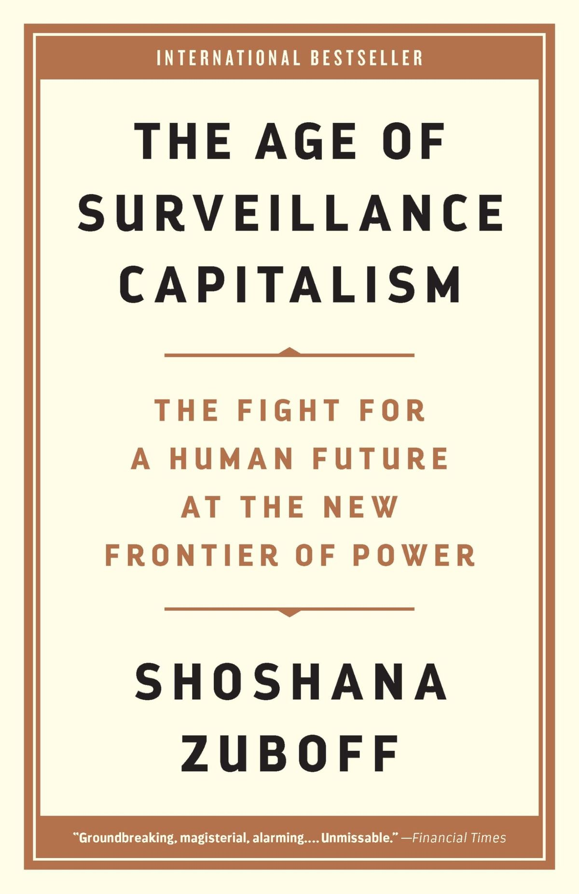

Bøger
- Brinkmann, Svend & Tanggaard, Lene, 2010. Interviewet - samtalen som forskningsmetode. I S. Brinkmann & L. Tanggaard (Red.), Kvalitative metoder: En grundbog (29-53). Hans Reitzels Forlag.
- Gillespie, Tarleton, 2018). Custodians of The Internet. Yale University Press/New Haven & London.
- Zuboff, Shoshana, 2019. The Age of Surveillance Capitalism. PublicAffairs, Hachette Book Group (*vær opmærksom på at denne bog ikke har sidetal og vi har derfor taget udgangspunkt i pdf-sidetal)
Videnskabelige artikler
- Baker, Catherine., Ging, Debbie., Andreasen, Maja Brandt., 2024. Recommending Toxicity: The role of algorithmic recommender functions on YouTube Shorts and TikTok in promoting male supremacist influencers. DCU Anti-Bullying Centre, Dublin City University. Tilgængelig på: link
- Center for Digital Pædagogik, 2025. Forundersøgelse - Incelfællesskaber i stor vækst. Tilgængelig på: link
- Izotova, N., Polishchuk, M., Taranik-Tkachuk, K., 2021, Discourse analysis and digital technologies: (TikTok, hashtags,Instagram, YouTube): universal and specific aspects in international practice.
- Falktoft, Ulrik, 2025, Os og Dem. Til brug for faget ”Digital Kultur” på IT-Arkitektur, Erhvervsakademi København
- Haandbæk Schmidt, Christina, 2020. Diskursanalyse. 2. udg. Tilgængelig på: link
- Kannik Haastrup, Helle, 2025. Adolescence: Derfor gør film og tv-serier os klogere. Tilgængelig på: link
Website
- Andersen Nielsen, Simon, 2025, DR, Forskere afliver myte om unges brug af sociale medier - men peger på sårbar gruppe. Tilgængelig på: link
- BBC, 2018, Elliot Rodger: How misogynist killer became 'incel hero'. Tilgængelig på: link
- Reddit, I am turning into an incel, "Substantial-Wave-406”. Tilgængelig på: link
- Videnskab.dk, 2026, Incels og 80/20-reglen: Forstå forskning bag kvindehadet i ny tv-serie. Tilgængelig på: link
